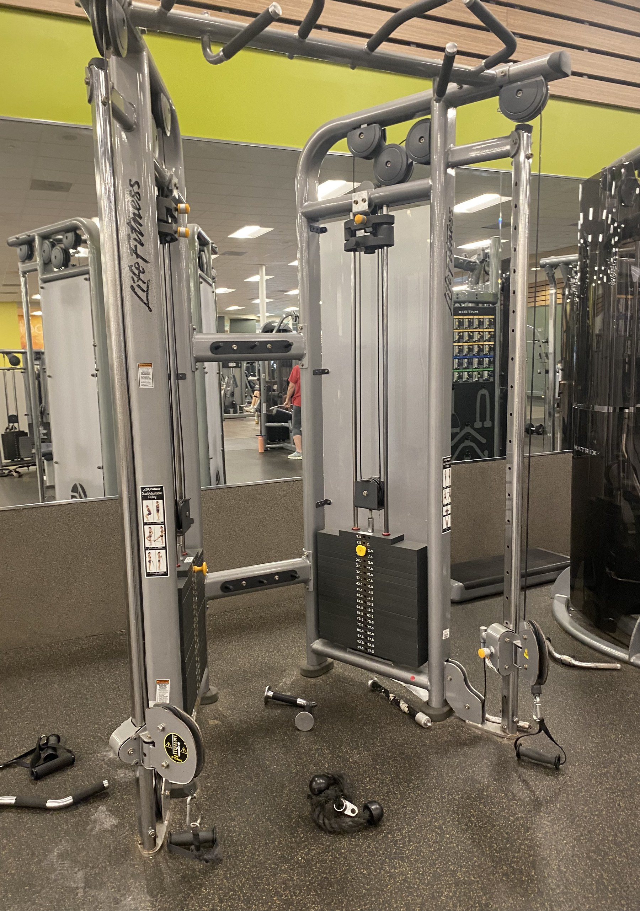
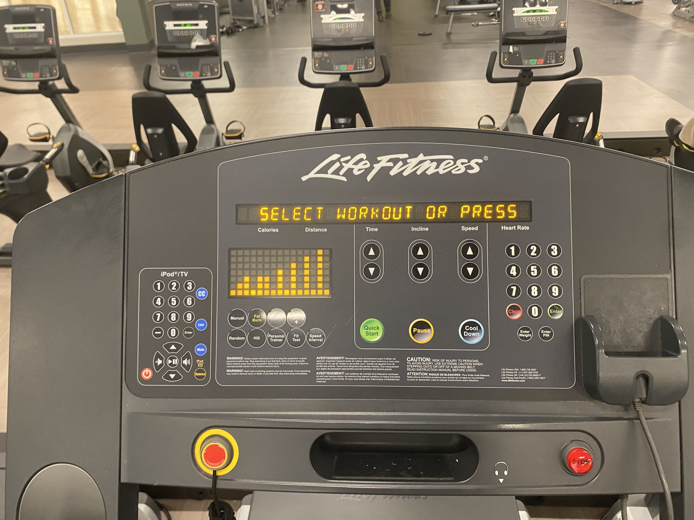
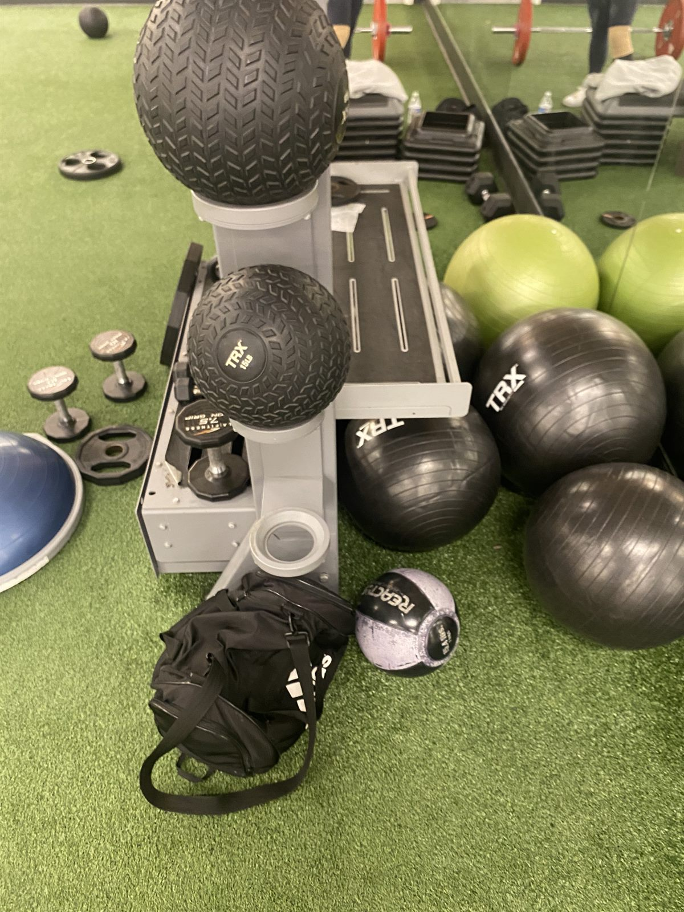
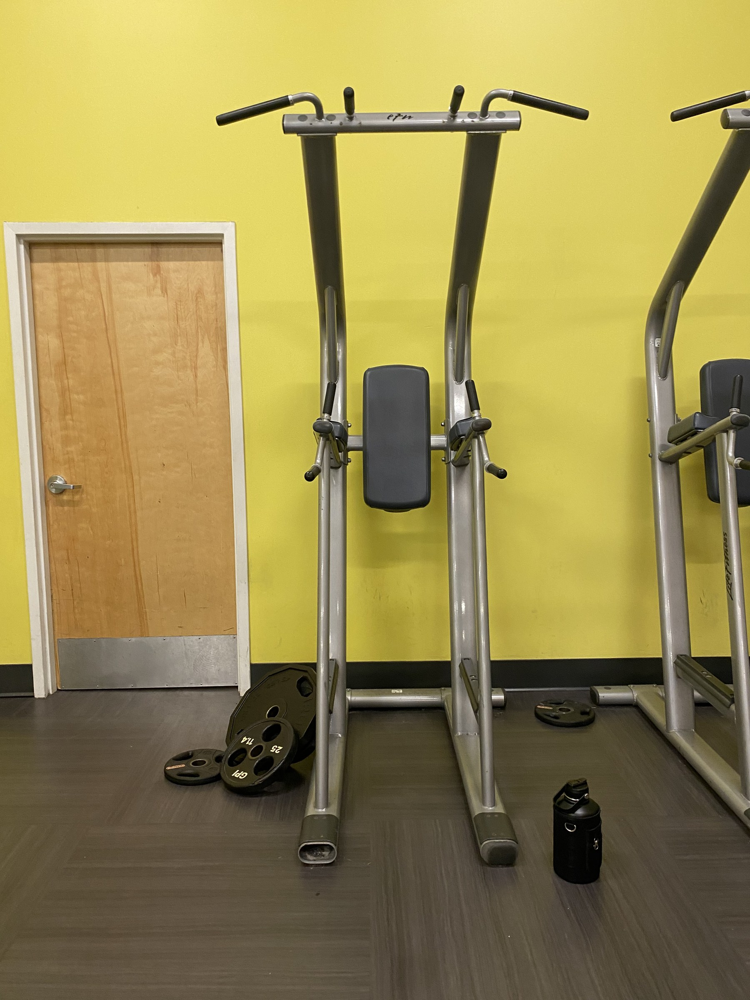
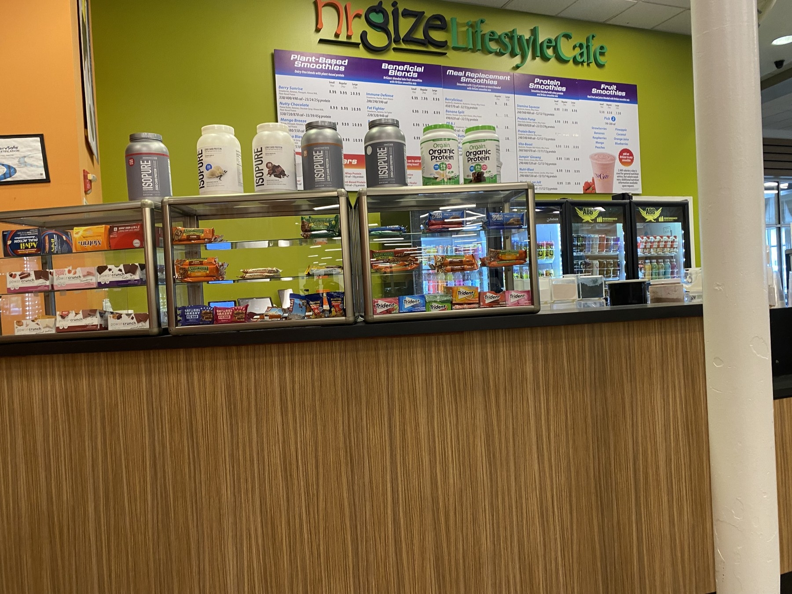

Squat Rack

The squat rack anchors lower-body training and supports heavy compound work with repeatable setup.
Spatial Guide
This map marks the main places in the gym that matter for bodybuilding. Training areas are where the lifting happens; support areas are where tracking, recovery, and routine decisions happen. The map is not meant to replace walking through a real gym, but it helps readers see how a workout moves across space.
 Squat Rack
Squat RackMain lower-body compound station.
Free Weights
Free Weight AreaDumbbells, benches, and open upper-body work.
Basketball Court
Basketball CourtReference point beside the left-side rooms on the gym map.
Cable
Cable MachineControlled isolation and angle work.
Dip Area
Dip AreaDip-focused upper-body station for chest, triceps, and bodyweight strength work.
Cardio
Cardio AreaTreadmills, ellipticals, and StairMasters.
Preacher Curl
Preacher CurlArm-focused machine work and high-rep finishers.
Stretch
Stretch AreaFake-grass style strip for warmups, abs, and mobility work.
Scale
Scale StationBody-weight tracking checkpoint.
Mirrors
Mirror RoomRecovery, posing checks, and class space.
Incline Pump
Incline Bench PumpUpper-chest work and press-focused finishing sets.
Accessory
Accessory Machine AreaMachine lifts that pad out upper-day volume after compounds.
Chest Fly
Chest Fly PumpIsolation work for stretch, squeeze, and end-of-session chest volume.
Juice
Juice BarProtein shakes and post-workout snacks.
Tennis Court Room
Tennis Court RoomThis lower room marks the tennis court wing. The rooms above it are also tennis court rooms.
Squat Rack
Squat RackMain lower-body compound station.
Free Weights
Free Weight AreaDumbbells, benches, and open upper-body work.
Basketball Court
Basketball CourtReference point beside the left-side rooms on the gym map.
Cable
Cable MachineControlled isolation and angle work.
Dip Area
Dip AreaDip-focused upper-body station for chest, triceps, and bodyweight strength work.
Cardio
Cardio AreaTreadmills, ellipticals, and StairMasters.
Preacher Curl
Preacher CurlArm-focused machine work and high-rep finishers.
Stretch
Stretch AreaFake-grass style strip for warmups, abs, and mobility work.
Scale
Scale StationBody-weight tracking checkpoint.
Mirrors
Mirror RoomRecovery, posing checks, and class space.
Incline Pump
Incline Bench PumpUpper-chest work and press-focused finishing sets.
Accessory
Accessory Machine AreaMachine lifts that pad out upper-day volume after compounds.
Chest Fly
Chest Fly PumpIsolation work for stretch, squeeze, and end-of-session chest volume.
Juice
Juice BarProtein shakes and post-workout snacks.
Tennis Court Room
Tennis Court RoomThis lower room marks the tennis court wing. The rooms above it are also tennis court rooms.
Barbell = Training Area
Clipboard = Support / Utility Area
Bolt = Pump-Focused Area
Map image and location photos come from the project archive. Future updates should replace reused location photos with new photos of the cable machine, cardio area, mirror room, and juice bar.
Each profile combines a view of the location with practical notes and a bodybuilding value rating.
The squat rack anchors lower-body training and supports heavy compound work with repeatable setup.

The bench area is central for chest development, pressing strength, and consistent upper-body work.

Free weights support accessory lifts, rows, presses, and movement variety outside the main rack stations.

Cables help target muscles from different angles and keep tension steady during isolation work.

Cardio equipment becomes especially important during cutting phases and recovery-aware programming.

The scale turns progress into trend data, especially during bulks, cuts, and maintenance phases.

This stretch area stands for warmups, mobility work, and the lighter equipment that supports recovery between hard sessions.

The dip area supports bodyweight pressing, triceps work, and upper-body strength outside standard bench patterns.

The juice bar is a post-workout support stop and the final scene of the visual essay.